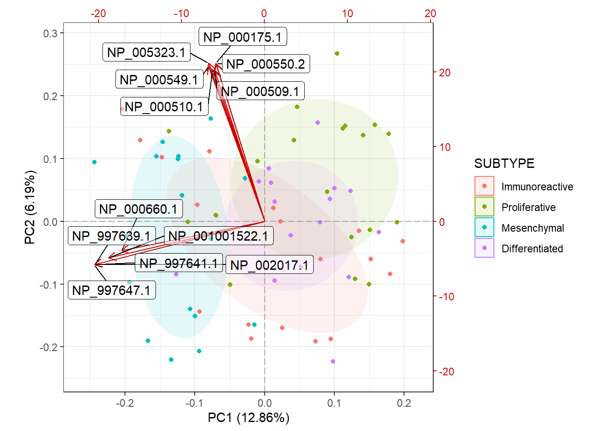

5.4 PCA
Principal Component Analysis (PCA) is an unsupervised dimensionality reduction technique. It is useful for visualizing high-dimensional data in a lower-dimensional (usually 2D) space while retaining as much information from the original data as possible. It does this by creating linear combinations of features called principal components in such a way that that the first principal component (PC1) explains the most variation in the original data, PC2 explains the second most, and so on. Typically, we create scatterplots of PC1 vs PC2 to visualize relationships between samples with the plot_pca function from the MSnSet.utils package.
PCA plots are used to check for batch effects and sample differences due to variables of interest. If samples appear to separate by group or according to a continuous variable and the first two principal components explain a decent percentage of the variance in the original data, then we are fairly confident that the predictor affected the data in some way or is at least correlated to something that did.
Note that while there are PCA methods that allow some degree of missing data (see pcaMethods::pca for details), plot_pca makes use of the prcomp function, which does not. We do not need to filter data prior to running plot_pca, as it handles that and prints a message to tell us how many complete rows remained. If there are very few complete features, PCA will still work, but the results may not be very meaningful. In this case, it may be a good idea to impute missing values.
We will begin with the base plot. The axis titles show how much variance in the original data is explained by each component. This is built with the ggplot2 package, so it can be customized with other functions in the package.
# Default plot
plot_pca(oca.set)Of the total 8103 features, 4738 were present in all 73 samples and used for PCA. Also notice that PC1 and PC2 explain less than 1/5 of the variance in the original data.
Now, we will color points according to their “SUBTYPE” group label and add a 50% Normal confidence ellipse for each group. We could remove the ellipse by setting show_ellipse to FALSE. We will also change the legend title to “Subtype.”
# Points colored by SUBTYPE
plot_pca(oca.set, phenotype = "SUBTYPE", legend_title = "Subtype")It looks like samples slightly separate by SUBTYPE, and there may be features that are statistically different between the Proliferative and Mesenchymal groups. Something to keep in mind when performing differential analysis. Now, we will check for potential batch effects by coloring points by their “Batch” group.
# Points colored by Batch
plot_pca(oca.set, phenotype = "Batch")
For the most part, it seems like all of the batches overlap and are somewhat centered on the origin (aside from batch X17). It is difficult to determine if there is a batch effect, so it may be a good idea to correct for it anyway. This is covered in a different section.
We can also use this function to identify the most influential features in PCA space with the biplot argument.
plot_pca(oca.set, phenotype = "SUBTYPE", biplot = TRUE,
label_args = list(color = "black"))
From the biplot, we can see that proteins that begin with “NP_9976” are major drivers in the separation of the Mesenchymal and Proliferative samples. Similarly, we can see that there are a few blood proteins (hemoglobin subunits: NP000549.1 and NP_000550.2) that are major drivers of separation along PC2, though PC2 only explains about 6% of the variance in the original data. See ?plot_pca for more customization options.